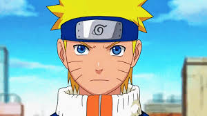

Naruto
O Naruto pode ser um pouco duro as vezes, talvez você não saiba disso, mas o Naruto também cresceu sem pai. Na verdade ele nunca conheceu nenhum de seus pais, e nunca teve nenhum amigo em nossa aldeia. Mesmo assim eu nunca vi ele chorar, ficar zangado ou se dar por vencido, ele está sempre disposto a melhorar, ele quer ser respeitado, é o sonho dele e o Naruto daria a vida por isso sem hesitar. Meu palpite é que ele se cansou de chorar e decidiu fazer alguma coisa a respeito!
HATAKE, Kakashi